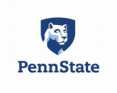

Sep. 2022 - present, School of Computer Science and Engineering, Sun Yat-sen University,
Bachelor of Engineering.
Biography
Hi,
I'm a fourth-year undergraduate at the School of Computer Science and Engineering, Sun Yat-sen University. I previously studied from Zhi Zhou and since last summer I've been collaborating with Jordan Boyd-Graber from the University of Maryland, College Park. Since this June, I've been actively working with Dongwon Lee from The Pennsylvania State University and Ce Zhang from University of Sheffield
Research Interest My research interests mainly focus on the application of information retrieval and retrieval-augmented large language models, especially in real-world tasks such as fact verification and question answering. Get to know me better.
Research
DIVER: progressive real-time fact verification system under partial information
You can view a demonstration of DIVER [here].
Since last summer, under the supervision of Prof. Jordan Boyd-Graber, I have been leading the development of a progressive real-time fact verification system under partial information, which also serves as the AI participant in the online fact-checking show "Um, Actually". The system is designed to continuously process incoming information—whether from television hosts, live conversations, or other real-time sources—and perform immediate information retrieval and fact verification. Remarkably, it can even interrupt a speaker the moment it detects a factual error.
To achieve this, we designed iterative sub-claim extraction, dynamic multi-hop adaptive query generation, and efficient, low-cost evidence filtering methods. This resulted in the first progressive real-time fact verification system under partial information, DIVER (Dynamic and Iterative Fact VERification). Our first paper based on this work has been completed and submitted to ACL Rolling Review. You can view a demonstration of DIVER [here].
Multi-hop Table Fact Verification with Semantic Tree Reasoning and Retrieval
Since June 2025, I have been working under the supervision of Prof. Dongwon Lee and Prof. Ce Zhang on table-based fact verification. Our project addresses two relatively unexplored challenges in this domain: table retrieval for fact verification and multi-table, multi-hop fact verification.
To this end, we constructed a new multi-hop table fact verification dataset based on OTT-QA, covering two-hop, three-hop, and four-hop reasoning. The dataset further categorizes hops into six relation types (parallel, chain, aggregation, etc.). Building on BM25, we developed a retrieval method specifically tailored for fact verification, which outperforms semantic-based retrievers such as SentenceBERT on our dataset.
To better handle multi-hop structures and strengthen local retrieval and reasoning, we designed a semantic-tree reasoning framework that integrates semantic trees with large language models. Currently, this approach achieved an accuracy of 87.8% on standard single-hop benchmark TabFact (near state-of-the-art) and has already surpassed traditional models in preliminary experiments on our multi-hop dataset.
Education

May. 2024 - present, Computer Science Department, University of Maryland, College Park,
Research Assistant and Visiting Student.

June. 2025 - present, College of Information Sciences and Technology, The Pennsylvania State University,
Research Assistant and Visiting Student.